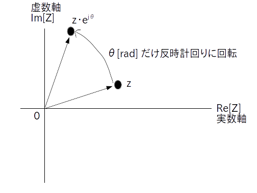
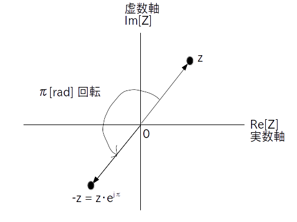

ここでは掛け算の特殊な場合である回転について説明します。
絶対値が 1 の複素数の掛け算は回転を表します。
$\theta$ [rad] を任意の実数値としたとき、絶対値が 1 の複素数
\[ \textrm{e}^{\{j\cdot \theta\}} \]
を考える。
これを任意の複素数 $z$ に掛けると
が得られるが、これは原点を中心として $z$ が $\theta$ [rad] だけ複素平面内で反時計回りに回転したことを意味する。
なお $\theta$ がマイナスの時は時計回りに回転する。
上の式の意味は図で考えた方が分かりやすいでしょう
図1を見れば元の複素数が $\theta$ [rad] だけ逆時計回りに回転移動していることが一目瞭然です。

さらに回転の特別の場合として複素数に -1 を掛けた時のことを考えます。
結論から言うと複素数 $z$ は 180 度回転します。
より
\[ -z = z \cdot \textrm{e}^{j\pi} = |z| \cdot \textrm{e}^{\{j\cdot (\angle \ z + \pi)\}} \]なので、複素数 $z$ に -1 を掛けることは $z$ を複素平面内で180度回転させることと同じ意味である。
これも図で見ると理解しやすいです(図2)。

複素数の回転は回転行列を使った 2 次元ベクトルの回転と実質的に同じであることを説明します。
まず任意の 2 次元ベクトル $(x,y)$ を元に複素数 $z = x + j \cdot y$ を作ります。
$z$ を $\theta$ だけ回転させた複素数は上で示した通りに
となります。
次にこれを直交形式に変換して sin と cos を展開します。
さてこの結果の実部を $x'$、虚部を$y'$とすると
\[ x' = x \cdot \cos \theta - y \cdot \sin \theta \] \[ y' = y \cdot \cos \theta + x \cdot \sin \theta \]となりますが、これを行列演算で書き直すと次の様になります。
\[ \begin{bmatrix} x' \\ y' \\ \end{bmatrix} = \begin{bmatrix} \cos\theta & -\sin\theta \\ \sin\theta & \cos\theta \\ \end{bmatrix} \begin{bmatrix} x \\ y \\ \end{bmatrix} \]これは回転行列を使って 2次元ベクトル $(x,y)$ を $\theta$ [rad] だけ回転させて 2次元ベクトル $(x',y')$ を求めていることを意味します。